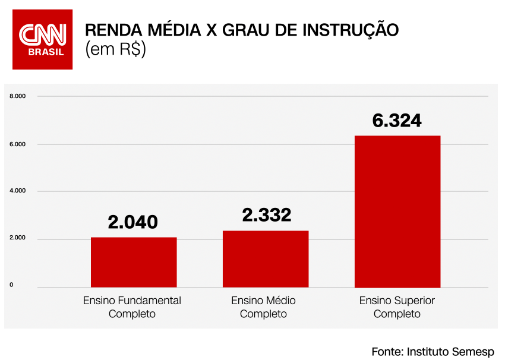

DICAS FINANCEIRAS
Invista no seu desenvolvimento e capacitação.
Não invista apenas em ações e criptomoedas, mas também na sua educação!!! Uma dica fundamental para o sucesso financeiro do jovem é continuar investindo na sua educação e capacitação.
Para se ter uma ideia, quem possui diploma universitário tem maior empregabilidade e um salário ao menos duas vezes superior a quem concluiu apenas o ensino médio, de acordo com dados do IBGE.
Por mais essencial é básico que essa dica possa parecer, boa educação e mão de obra qualificada ainda são diferenciais de mercado. Segundo dados do Instituto Semesp, apenas 18,1% dos jovens de 18 a 24 anos estão matriculados no ensino superior.
Ou seja, não encare a educação como gasto, mas como investimento. Continue sempre se capacitando e melhorando suas habilidades profissionais que isso comprovadamente trará reflexos positivos na sua vida financeira.
